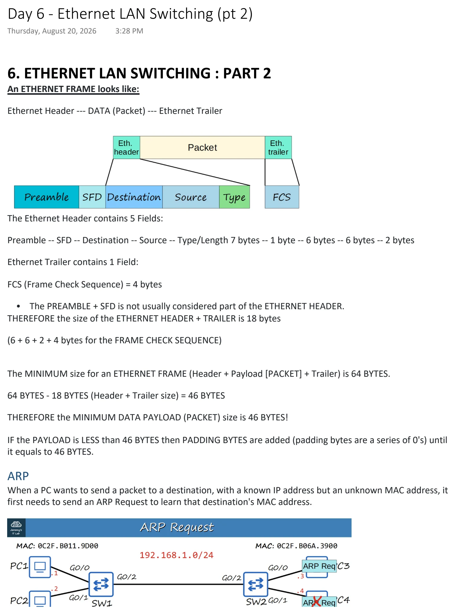
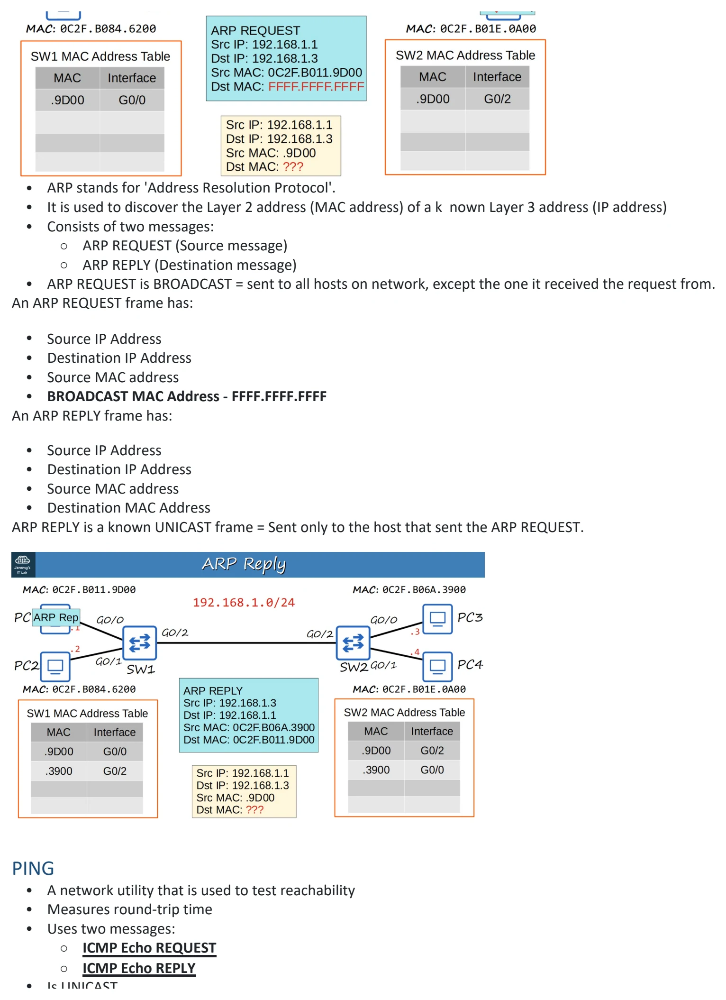
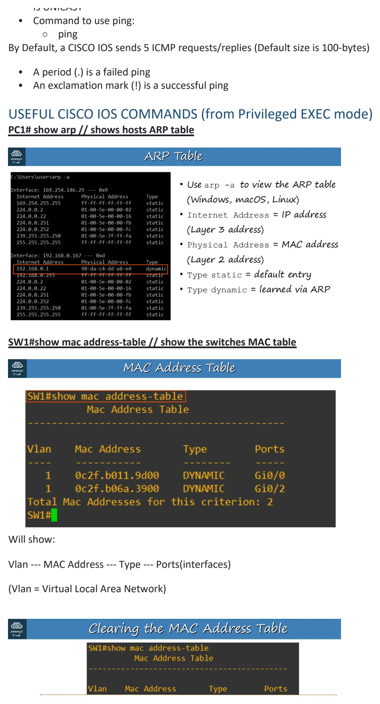
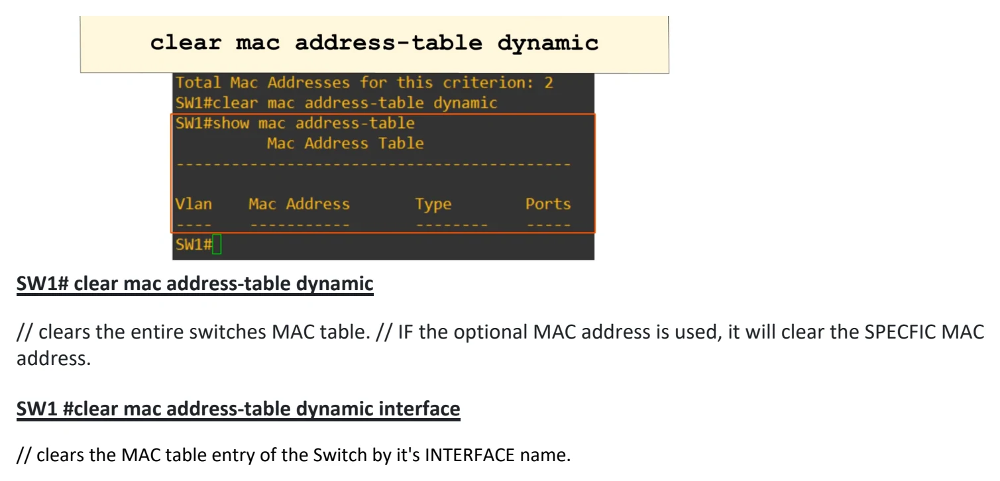

Ethernet LAN Switching (pt 2)
Download original PDF



Text view — Ethernet LAN Switching (pt 2)
Extracted from the original export. Diagrams and some formatting appear in the notes above.
Day 6 - Ethernet LAN Switching (pt 2) Thursday, August 20, 2026 3:28 PM 6. ETHERNET LAN SWITCHING : PART 2 An ETHERNET FRAME looks like: Ethernet Header --- DATA (Packet) --- Ethernet Trailer The Ethernet Header contains 5 Fields: Preamble -- SFD -- Destination -- Source -- Type/Length 7 bytes -- 1 byte -- 6 bytes -- 6 bytes -- 2 bytes Ethernet Trailer contains 1 Field: FCS (Frame Check Sequence) = 4 bytes • The PREAMBLE + SFD is not usually considered part of the ETHERNET HEADER. THEREFORE the size of the ETHERNET HEADER + TRAILER is 18 bytes (6 + 6 + 2 + 4 bytes for the FRAME CHECK SEQUENCE) The MINIMUM size for an ETHERNET FRAME (Header + Payload [PACKET] + Trailer) is 64 BYTES. 64 BYTES - 18 BYTES (Header + Trailer size) = 46 BYTES THEREFORE the MINIMUM DATA PAYLOAD (PACKET) size is 46 BYTES! IF the PAYLOAD is LESS than 46 BYTES then PADDING BYTES are added (padding bytes are a series of 0's) until it equals to 46 BYTES. ARP When a PC wants to send a packet to a destination, with a known IP address but an unknown MAC address, it first needs to send an ARP Request to learn that destination's MAC address. • ARP stands for 'Address Resolution Protocol'. • It is used to discover the Layer 2 address (MAC address) of a k nown Layer 3 address (IP address) • Consists of two messages: ○ ARP REQUEST (Source message) ○ ARP REPLY (Destination message) • ARP REQUEST is BROADCAST = sent to all hosts on network, except the one it received the request from. An ARP REQUEST frame has: • Source IP Address • Destination IP Address • Source MAC address • BROADCAST MAC Address - FFFF.FFFF.FFFF An ARP REPLY frame has: • Source IP Address • Destination IP Address • Source MAC address • Destination MAC Address ARP REPLY is a known UNICAST frame = Sent only to the host that sent the ARP REQUEST. PING • A network utility that is used to test reachability • Measures round-trip time • Uses two messages: ○ ICMP Echo REQUEST ○ ICMP Echo REPLY • Is UNICAST • Command to use ping: ○ ping By Default, a CISCO IOS sends 5 ICMP requests/replies (Default size is 100-bytes) • A period (.) is a failed ping • An exclamation mark (!) is a successful ping USEFUL CISCO IOS COMMANDS (from Privileged EXEC mode) PC1# show arp // shows hosts ARP table SW1#show mac address-table // show the switches MAC table Will show: Vlan --- MAC Address --- Type --- Ports(interfaces) (Vlan = Virtual Local Area Network) SW1# clear mac address-table dynamic // clears the entire switches MAC table. // IF the optional MAC address is used, it will clear the SPECFIC MAC address. SW1 #clear mac address-table dynamic interface // clears the MAC table entry of the Switch by it's INTERFACE name. Day 6 - Ethernet LAN Switching (pt 2) Thursday, August 20, 2026 3:28 PM 6. ETHERNET LAN SWITCHING : PART 2 An ETHERNET FRAME looks like: Ethernet Header --- DATA (Packet) --- Ethernet Trailer The Ethernet Header contains 5 Fields: Preamble -- SFD -- Destination -- Source -- Type/Length 7 bytes -- 1 byte -- 6 bytes -- 6 bytes -- 2 bytes Ethernet Trailer contains 1 Field: FCS (Frame Check Sequence) = 4 bytes • The PREAMBLE + SFD is not usually considered part of the ETHERNET HEADER. THEREFORE the size of the ETHERNET HEADER + TRAILER is 18 bytes (6 + 6 + 2 + 4 bytes for the FRAME CHECK SEQUENCE) The MINIMUM size for an ETHERNET FRAME (Header + Payload [PACKET] + Trailer) is 64 BYTES. 64 BYTES - 18 BYTES (Header + Trailer size) = 46 BYTES THEREFORE the MINIMUM DATA PAYLOAD (PACKET) size is 46 BYTES! IF the PAYLOAD is LESS than 46 BYTES then PADDING BYTES are added (padding bytes are a series of 0's) until it equals to 46 BYTES. ARP When a PC wants to send a packet to a destination, with a known IP address but an unknown MAC address, it first needs to send an ARP Request to learn that destination's MAC address. • ARP stands for 'Address Resolution Protocol'. • It is used to discover the Layer 2 address (MAC address) of a k nown Layer 3 address (IP address) • Consists of two messages: ○ ARP REQUEST (Source message) ○ ARP REPLY (Destination message) • ARP REQUEST is BROADCAST = sent to all hosts on network, except the one it received the request from. An ARP REQUEST frame has: • Source IP Address • Destination IP Address • Source MAC address • BROADCAST MAC Address - FFFF.FFFF.FFFF An ARP REPLY frame has: • Source IP Address • Destination IP Address • Source MAC address • Destination MAC Address ARP REPLY is a known UNICAST frame = Sent only to the host that sent the ARP REQUEST. PING • A network utility that is used to test reachability • Measures round-trip time • Uses two messages: ○ ICMP Echo REQUEST ○ ICMP Echo REPLY • Is UNICAST • Command to use ping: ○ ping By Default, a CISCO IOS sends 5 ICMP requests/replies (Default size is 100-bytes) • A period (.) is a failed ping • An exclamation mark (!) is a successful ping USEFUL CISCO IOS COMMANDS (from Privileged EXEC mode) PC1# show arp // shows hosts ARP table SW1#show mac address-table // show the switches MAC table Will show: Vlan --- MAC Address --- Type --- Ports(interfaces) (Vlan = Virtual Local Area Network) SW1# clear mac address-table dynamic // clears the entire switches MAC table. // IF the optional MAC address is used, it will clear the SPECFIC MAC address. SW1 #clear mac address-table dynamic interface // clears the MAC table entry of the Switch by it's INTERFACE name. Day 6 - Ethernet LAN Switching (pt 2) Thursday, August 20, 2026 3:28 PM 6. ETHERNET LAN SWITCHING : PART 2 An ETHERNET FRAME looks like: Ethernet Header --- DATA (Packet) --- Ethernet Trailer The Ethernet Header contains 5 Fields: Preamble -- SFD -- Destination -- Source -- Type/Length 7 bytes -- 1 byte -- 6 bytes -- 6 bytes -- 2 bytes Ethernet Trailer contains 1 Field: FCS (Frame Check Sequence) = 4 bytes • The PREAMBLE + SFD is not usually considered part of the ETHERNET HEADER. THEREFORE the size of the ETHERNET HEADER + TRAILER is 18 bytes (6 + 6 + 2 + 4 bytes for the FRAME CHECK SEQUENCE) The MINIMUM size for an ETHERNET FRAME (Header + Payload [PACKET] + Trailer) is 64 BYTES. 64 BYTES - 18 BYTES (Header + Trailer size) = 46 BYTES THEREFORE the MINIMUM DATA PAYLOAD (PACKET) size is 46 BYTES! IF the PAYLOAD is LESS than 46 BYTES then PADDING BYTES are added (padding bytes are a series of 0's) until it equals to 46 BYTES. ARP When a PC wants to send a packet to a destination, with a known IP address but an unknown MAC address, it first needs to send an ARP Request to learn that destination's MAC address. • ARP stands for 'Address Resolution Protocol'. • It is used to discover the Layer 2 address (MAC address) of a k nown Layer 3 address (IP address) • Consists of two messages: ○ ARP REQUEST (Source message) ○ ARP REPLY (Destination message) • ARP REQUEST is BROADCAST = sent to all hosts on network, except the one it received the request from. An ARP REQUEST frame has: • Source IP Address • Destination IP Address • Source MAC address • BROADCAST MAC Address - FFFF.FFFF.FFFF An ARP REPLY frame has: • Source IP Address • Destination IP Address • Source MAC address • Destination MAC Address ARP REPLY is a known UNICAST frame = Sent only to the host that sent the ARP REQUEST. PING • A network utility that is used to test reachability • Measures round-trip time • Uses two messages: ○ ICMP Echo REQUEST ○ ICMP Echo REPLY • Is UNICAST • Command to use ping: ○ ping By Default, a CISCO IOS sends 5 ICMP requests/replies (Default size is 100-bytes) • A period (.) is a failed ping • An exclamation mark (!) is a successful ping USEFUL CISCO IOS COMMANDS (from Privileged EXEC mode) PC1# show arp // shows hosts ARP table SW1#show mac address-table // show the switches MAC table Will show: Vlan --- MAC Address --- Type --- Ports(interfaces) (Vlan = Virtual Local Area Network) SW1# clear mac address-table dynamic // clears the entire switches MAC table. // IF the optional MAC address is used, it will clear the SPECFIC MAC address. SW1 #clear mac address-table dynamic interface // clears the MAC table entry of the Switch by it's INTERFACE name. Day 6 - Ethernet LAN Switching (pt 2) Thursday, August 20, 2026 3:28 PM 6. ETHERNET LAN SWITCHING : PART 2 An ETHERNET FRAME looks like: Ethernet Header --- DATA (Packet) --- Ethernet Trailer The Ethernet Header contains 5 Fields: Preamble -- SFD -- Destination -- Source -- Type/Length 7 bytes -- 1 byte -- 6 bytes -- 6 bytes -- 2 bytes Ethernet Trailer contains 1 Field: FCS (Frame Check Sequence) = 4 bytes • The PREAMBLE + SFD is not usually considered part of the ETHERNET HEADER. THEREFORE the size of the ETHERNET HEADER + TRAILER is 18 bytes (6 + 6 + 2 + 4 bytes for the FRAME CHECK SEQUENCE) The MINIMUM size for an ETHERNET FRAME (Header + Payload [PACKET] + Trailer) is 64 BYTES. 64 BYTES - 18 BYTES (Header + Trailer size) = 46 BYTES THEREFORE the MINIMUM DATA PAYLOAD (PACKET) size is 46 BYTES! IF the PAYLOAD is LESS than 46 BYTES then PADDING BYTES are added (padding bytes are a series of 0's) until it equals to 46 BYTES. ARP When a PC wants to send a packet to a destination, with a known IP address but an unknown MAC address, it first needs to send an ARP Request to learn that destination's MAC address. • ARP stands for 'Address Resolution Protocol'. • It is used to discover the Layer 2 address (MAC address) of a k nown Layer 3 address (IP address) • Consists of two messages: ○ ARP REQUEST (Source message) ○ ARP REPLY (Destination message) • ARP REQUEST is BROADCAST = sent to all hosts on network, except the one it received the request from. An ARP REQUEST frame has: • Source IP Address • Destination IP Address • Source MAC address • BROADCAST MAC Address - FFFF.FFFF.FFFF An ARP REPLY frame has: • Source IP Address • Destination IP Address • Source MAC address • Destination MAC Address ARP REPLY is a known UNICAST frame = Sent only to the host that sent the ARP REQUEST. PING • A network utility that is used to test reachability • Measures round-trip time • Uses two messages: ○ ICMP Echo REQUEST ○ ICMP Echo REPLY • Is UNICAST • Command to use ping: ○ ping By Default, a CISCO IOS sends 5 ICMP requests/replies (Default size is 100-bytes) • A period (.) is a failed ping • An exclamation mark (!) is a successful ping USEFUL CISCO IOS COMMANDS (from Privileged EXEC mode) PC1# show arp // shows hosts ARP table SW1#show mac address-table // show the switches MAC table Will show: Vlan --- MAC Address --- Type --- Ports(interfaces) (Vlan = Virtual Local Area Network) SW1# clear mac address-table dynamic // clears the entire switches MAC table. // IF the optional MAC address is used, it will clear the SPECFIC MAC address. SW1 #clear mac address-table dynamic interface // clears the MAC table entry of the Switch by it's INTERFACE name.